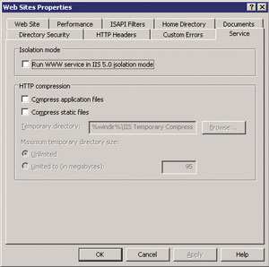
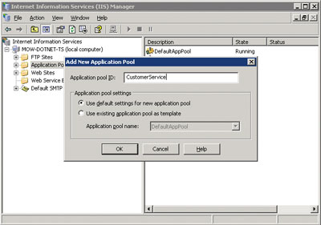
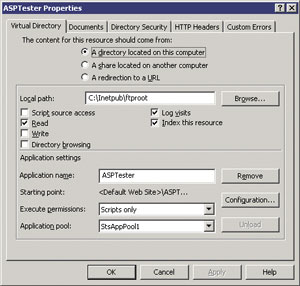
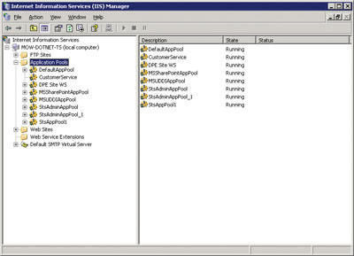

По материалам корпорации Microsoft
Смена программных платформ - обычная для ИТ-отрасли процедура, которая повторяется с периодичностью в 3-5 лет (как показывает опыт, обновление чаще всего делается "через версию"). Как же осуществить этот переход с минимальными затратами, гарантировав при этом работоспособность всех существующих приложений?
Рассмотрим проблему обновления корпоративного ПО на примере миграции приложений с серверных платформ Microsoft Windows NТ 4.0 и Windows 2000 на Windows Server 2003. Важным требованием при этом будем считать минимизацию затрат на аппаратные средства и обслуживание. Речь пойдет о переводе Web-приложений на службу Internet Information Services 6.0 (IIS 6.0) и о соответствующем переносе Windows-приложений, построенных на базе компонентов COM+.
В Windows Server 2003 появилось много новшеств по сравнению с предыдущими серверными ОС Microsoft (см. "BYTE/Россия" No 5'2003 и 8'2003), и при переходе на эту платформу очень важно прежде выявить основные возможности используемой ОС и проблемы, связанные с каждой из них. Подчеркнем, что мы сосредоточимся именно на обновлении существующих приложений для их работы с Windows Server 2003, а не на использовании упомянутых новых возможностей.
Языки, интерфейсы API и структуры
При переходе с Windows NT 4.0/2000 на Windows Server 2003 может потребоваться перенос в новую среду приложений, написанных на Visual Basic (VB 6.0), C++ и других языках. В принципе такие приложения можно перенести на Windows Server 2003 без изменений. Переписывать их с использованием .NET Framework вряд ли имеет смысл - лучше выполнять такой переход в новую среду исполнения, только если необходимо будет изменить или дополнить функциональность прикладных программ.
Для запуска в Windows Server 2003 приложений, написанных на языке Visual Basic 6.0, следует убедиться в том, что установлена библиотека VB Runtime (это предусмотрено поставкой системы по умолчанию). Аналогично для запуска приложений на языке C++, нуждающихся в библиотеке MFC, необходимо установить MFC. Windows Server 2003 включает библиотеку MFC 4.2. Сведения о библиотеках Microsoft DLL можно найти в справочной базе данных DLL Help Database (http://support.microsoft.com). Например, при поиске файла MSVBVM60.DLL (виртуальная машина VB 6.0) база данных выдаст сведения о том, что версия 6.0.92.37 поставляется в составе Windows XP и Windows Server 2003. Такой справочник очень полезен для поиска ответов на подобные этому вопросы, касающиеся файлов поддержки приложений.
При миграции серверных приложений на Windows Server 2003 (а также клиентских приложений - на Windows XP) следует создать для каждого приложения файл "манифеста" - файл в XML-формате, имеющий расширение .man и содержащий перечисление всех необходимых для исполнения приложения файлов DLL с указанием их версий (в "манифесте" должны быть записаны те версии файлов DLL, которые использовались при разработке и тестировании приложения). При запуске на Windows Server 2003 исполняемого EXE-файла будут загружаться только указанные в манифесте версии DLL.
Служба каталогов Active Directory
В Windows Server 2003 имеются многочисленные усовершенствования службы каталогов Active Directory. В комплект поставки ОС входят несколько служебных программ для обновления установок, сделанных в среде Windows NT 4.0 или 2000. Кроме того, Windows Server 2003 расширяет возможности администраторов, обеспечивая эффективную настройку и управление службой Active Directory даже в очень больших организациях с множеством Web-узлов, доменов и лесов. В то же время существующие приложения могут работать в новой среде без потери совместимости.
Чтобы снизить нагрузку на процессоры контроллеров доменов и повысить их отказоустойчивость, можно в процессе миграции отключить процедуру сжатия трафика репликации между контроллерами доменов, расположенными на разных узлах. Для копирования паролей из среды Windows NT 4.0/2000, а также для их передачи между лесами в среде Windows 2000 администраторы могут воспользоваться средством "Миграция в Active Directory".
Служба Active Directory в новой версии запрещает удаленный вход пользователей в систему с использованием локальных учетных записей с пустыми паролями. Войти в систему с пустым паролем можно только непосредственно с консоли компьютера для работы с локальными учетными записями. ИТ-специалистам, выполняющим удаленное администрирование, нужно войти в систему с локальной консоли компьютера и сменить пароль, введя конкретное (не пустое) значение.
Служба Internet Information Services
ОС Windows Server 2003 включает службу IIS 6.0, существенно измененную и усовершенствованную по сравнению с тем, что имелось в предыдущих версиях Windows. В частности, загрузка исправлений для службы IIS теперь не приводит к прерыванию обслуживания - возможности управления процессами в IIS 6.0 позволяют устанавливать исправления во время работы службы. Если же загружаемое исправление способно привести к прерыванию обслуживания, администратор может запланировать подходящее время для его установки после загрузки.
Служба IIS 6.0 изолирует FTP-пользователей в их каталогах, не давая им возможности просматривать или перезаписывать содержимое Web-каталогов других пользователей. FTP-служба отображает каталог верхнего уровня пользователя как корневой, не позволяя двигаться вверх по дереву каталогов. Поэтому администраторы могут, не опасаясь незаконного проникновения, создавать на одном узле несколько FTP-узлов. В рамках каждого такого узла пользователь может создавать, модифицировать и удалять файлы и папки.
Новый режим изоляции рабочих процессов, введенный в службе IIS 6.0, повышает надежность, отказоустойчивость и производительность, однако он может оказаться несовместим с рядом прежних приложений. Режим IIS 6.0 с обратной совместимостью называется IIS 5.0 Isolation Mode. Он гарантирует для Windows Server 2003 работу приложений IIS 5.0 ISAPI, которые функционировали на Windows 2000, без каких-либо изменений в них. Режим IIS 5.0 Isolation Mode полностью совместим с IIS 5.0, но при этом дополнительно предоставляет кэш, размещенный в ядре, и предусматривает постановку в очередь запросов в режиме ядра, которая в IIS 6.0 реализуется с использованием HTTP.SYS. IIS 5.0 Isolation Mode чаще всего требуется для приложений, которые не поддерживают режим с несколькими копиями или используют ISAPI-фильтры, выполняющие чтение необработанных данных.
ASP-приложения, не использующие ISAPI-фильтры, следует переносить на Windows Server 2003 без изменений. В Microsoft было проведено испытание, в ходе которого на Windows Server 2003 была перенесена ASP-программа, генерирующая HTML-код (в том числе на основе запросов к SQL-серверу через механизм ADO) и при этом использующая переменные Session и исходные данные ODBC. Приложение сначала запускалось в режиме IIS 5.0 Isolation Mode, а затем переключалось в режим IIS 6.0. После этого был создан пул приложений, и приложение поместили в этот пул. Программа работала нормально во всех режимах. Тестирование проводилось как на 32-разрядной версии ОС для процессоров x86, так и на 64-разрядной для процессора Itanium. Приложения ASP, написанные только с использованием сценариев (например, VBScript или ECMAScript) и не зависящие от 32-разрядных компонентов COM, отсутствующих в Windows Server 2003, работают в 64-разрядной версии Windows Server 2003 для Itanium, не требуя никаких изменений.
По умолчанию при новой установке службы IIS 6.0 используется режим изолированных рабочих процессов. При обновлении установки IIS 5.0 в качестве режима по умолчанию для IIS 6.0 выступает режим с обратной совместимостью. В любом случае этот режим можно установить с помощью соответствующего флага конфигурации в окне свойств Internet Service Manager на закладке Service (рис. 1), однако после переключения режима необходимо перезапустить службу IIS.
|  | Рис. 1. Управление свойствами Web-узлов.
|
При необходимости запуска сразу обоих режимов - одного для обратной совместимости, а другого для использования новых возможностей - нужно будет запустить службу IIS 6.0 на двух разных системах.
В табл. 1 приведены режимы изоляции приложений, используемые по умолчанию при различных условиях установок.
Таблица 1. Режимы изоляции приложений
| Существующая установка | Установленный по умолчанию режим изоляции приложений |
| Новая установка службы IIS 6.0 | Режим изоляции рабочих процессов |
| Обновление от предыдущей версии IIS 6.0 | Остается режим, который был у предыдущей установки |
| Обновление от версии IIS 5.0 | Режим изоляции IIS 5.0 |
| Обновление от версии IIS 4.0 | Режим изоляции IIS 5.0 |
В службах IIS 4.0 и IIS 5.0 данные конфигурации MetaBase (наследование, уведомление об изменениях, безопасность и т. д.) хранились в соответствующем двоичном файле. При переходе на IIS 6.0 этот файл (Metabase.bin) заменяется простыми текстовыми файлами в XML-формате. Создаваемая таким образом новая метабаза с именем MetaBase.xml размещается в папке %windir%\System32\inetsrv.
Раньше при настройке серверов ставилась цель обеспечить максимальную доступность и простоту администрирования; все возможности включались после унифицированной установки. В службе IIS 6.0 используется подход к обеспечению безопасности, принципиально отличный от предшествующих версий. Администраторам следует учитывать, что Windows Server 2003 и такие службы, как IIS, устанавливаются в заблокированном состоянии. Мастер блокировки безопасности службы IIS позволяет по необходимости включать и отключать функциональные возможности сервера. Например, для правильной работы Web-сервера может потребоваться разблокирование служб Active Server Pages (ASP), SharePoint или ASP.NET. Однако при обновлении ОС сохраняются функциональные возможности, включенные для сервера ранее.
Для вызова мастера блокировки безопасности службы IIS нужно щелкнуть правой кнопкой на значке компьютера, представляющего нужный сервер IIS, и выбрать команду "Безопасность". При этом запускается мастер, позволяющий внести необходимые изменения и дающий администратору широкие возможности контроля параметров.
Служба COM+
Хотя устаревшие приложения, использующие COM+, можно запускать без внесения изменений, иногда требуется объединять их с новыми приложениями на базе .NET Framework. Один из способов такого объединения заключается в интерпретации интерфейсов объектов COM+ как Web-сервисов XML, вызываемых из управляющей части приложений .NET Framework (или любого другого приложения, обеспечивающего связь через SOAP).
В службах IIS 4.0 и 5.0 ASP-приложения могут задействовать службы COM+ путем настройки WAM-объекта приложения в хранилище данных конфигурации. В IIS 6.0 службы COM+ отделены от компонентов и могут использоваться ASP-приложениями. Кроме того, в новой версии появились новые возможности для служб ASP (табл. 2).
Таблица 2. Новые функции служб COM+ и ASP
| Возможность | Описание |
| Поддержка слияния | Слияние (Fusion) позволяет разработчику ASP-приложения указать точные версии системных библиотек runtime и COM-компонентов, работающих с этим приложением. Это избавляет от проблем, связанных с установкой более свежих версий с отличающимися функциональными возможностями |
| Поддержка разделов | Разделы COM+ позволяют администратору определить разные конфигурации для различных пользователей одного приложения COM+. Такая конфигурация включает сведения о безопасности и контроль версий |
| Поддержка системы слежения (Tracker) | При включении системы слежения для COM+ администраторы могут определить, какой код и когда выполняется в рамках ASP-сеанса. Такой контроль чрезвычайно полезен при отладке ASP-приложений |
| Выбор потоковой модели | ASP с помощью COM+ позволяет разработчикам задать необходимый режим - однопотоковый (по умолчанию) или многопотоковый (доступный для приложений, использующих пулы объектов) |
Служба Microsoft Message Queuing (MSMQ) в Windows Server 2003 также была расширена по сравнению с ранними версиями. MSMQ обеспечивает эффективный обмен сообщениями между процессами - соответствующие функциональные возможности встроены в сервер BizTalk и другие серверные продукты. Служба доступна из VB.NET и C# и других языков, использующих .NET Framework. Для этого предусмотрен объект System.Messaging, который обеспечивает классы, отправляющие и получающие сообщения из сетевых очередей. Слабосвязанная архитектура поддерживает теперь более длинные очереди и возможность посылки данных SOAP в исходном формате, благодаря чему MSMQ может взаимодействовать с любым приложением, использующим SOAP в качестве формата передачи.
В службе MSMQ 3.0, поставляемой с Windows Server 2003, некоторые функции прежних версий были удалены. В результате может потребоваться модернизация тех приложений, которые использовали возможности, признанные недостаточно значимыми и полезными или замененные другими. В частности, необходимо проверить, как работают с MSMQ 3.0 те приложения, которые задействуют одну из перечисленных ниже возможностей.
- Соединитель MSMQ Exchange - не поддерживается в Windows XP и Windows Server 2003. Он продолжает оставаться доступным в предыдущих версиях Windows (NT 4.0 и 2000).
- Протокол IPX - не поддерживается в версии MSMQ 3.0.
- Служба MSMQ - недоступна в издании Windows XP Personal. Для доступа к MSMQ в Windows XP Personal можно запустить приложения на базе DCOM.
- Зависимый клиент службы MSMQ 3.0 - поддерживает только функциональность уровня MSMQ 2.0.
Отсюда следует, что для этих клиентов недоступны такие новые возможности службы MSMQ 3.0, как списки распределения. В качестве альтернативы предлагается развертывание решений на базе DCOM.
Доступ к базам данных
ОС Windows Server 2003 обеспечивает повышение производительности и гибкости для многих задач, и доступ к данным не составляет исключения. Усовершенствования позволяют обслуживать большее количество данных через большее, чем ранее, число параллельных подключений. К тому же в случаях, когда размер приложения превышает емкость сервера, стало намного проще расширить систему вширь или вверх.
Технология ADO продолжает поддерживаться в Windows Server 2003; новая технология .NET Framework не требует от приложений поддержки ADO.NET. Приложения, использующие ADO и ADO.NET, могут успешно сосуществовать в среде Windows Server 2003, более того, фактически они могут использовать одновременно обе технологии. Поддерживаются и технологии ODBC, поэтому использующие их приложения будут работать, если на сервере имеются драйверы нужных версий и необходимые файлы.
Проблемы, связанные с серверами
По сравнению с предыдущими версиями в Windows Server 2003 сделан ряд существенных изменений конфигурации, связанных с установкой ОС "с нуля". Кроме того, есть ряд нюансов, связанных с обновлением уже имеющейся ОС, содержащей приложения независимых разработчиков или программы, не устанавливаемые вместе с Windows Server 2003.
Необходимо выяснить, какие из имеющихся приложений могут оставаться на месте даже при обновлении ОС, а какие требуется переустановить. Например, многие приложения Win32 зависят от разделов реестра, определяющих такие элементы, как каталог, используемый приложением по умолчанию. За конкретными сведениями относительно необходимости переустановки следует обратиться к документации поставщика. Сторонние производители ПО также могут предлагать служебные программы для миграции своих приложений, которые запускаются до или после обновления до Windows Server 2003.
Когда такое обновление завершено, администраторы могут воспользоваться средством автообновления для автоматической загрузки исправлений и модификаций системы безопасности. Данная функция позволяет администраторам планировать установку обновлений ОС для минимизации потерь. Новый сервер локальных обновлений также позволяет контролировать обновления, которые распространяются на производственные серверы.
Процесс миграции
От Windows NT 4.0 к Windows Server 2003
Администраторы NT 4.0 могут выбрать миграцию прямо к Windows Server 2003 или же предпочесть первоначальное обновление до Windows 2000 в качестве промежуточного шага. Здесь мы рассмотрим вариант, когда на системах с ОС Windows NT 4.0 установлена служба IIS 4.0. Во время обновления будут выполняться следующие действия:
- обновление метабазы службы IIS 4.0 для использования нового формата IIS 6.0;
- наследование параметров безопасности из службы IIS 4.0;
- установка для приложений режима изоляции IIS 5.0;
- запуск приложений по умолчанию в одной группе приложений.
После обновления службы IIS можно выполнить обновления других служб, например, Active Directory, как описано выше.
От Windows 2000 к Windows Server 2003
Миграция из Windows 2000 к Windows Server 2003 относительно проста. Здесь мы рассмотрим вариант, когда в среде Windows 2000 установлена служба IIS 5.0. В процессе обновления, как описано выше, для службы IIS 4.0 будет выполнено обновление метабазы IIS и параметров безопасности.
ОС Windows Server 2003 включает также инструмент для миграции базы данных Key Management System (KMS) для Microsoft Exchange Server 2000, позволяющий переместить существующую базу данных KMS в центр сертификации Windows Server 2003. Такая миграция позволяет клиентам низкого уровня (Windows Me/2000/XP) использовать центр сертификации Windows Server 2003 для архивации и восстановления ключей.
Чтобы подробно пояснить процесс миграции, рассмотрим несколько примеров перемещения приложений.
Перемещение Web-приложений
В среде Windows Server 2003 необходимо гарантировать работу на IIS 6.0 тех приложений, которые выполнялись ранее под IIS 5.0 на Windows 2000. Как уже упоминалось, служба IIS 6.0 имеет два режима изоляции, отличающихся требованиями к конфигурации. Режим изоляции IIS 5.0 дает возможность изолировать приложение с помощью установки свойства AppIsolated. Как и в службе IIS 5.0, изолировать приложения можно внутри процесса, в группе или полностью. При групповой или полной изоляции повышается производительность - за счет упаковки данных, как это наблюдалось ранее в IIS 5.0.
Когда служба IIS 6.0 выполняется в режиме изоляции рабочих процессов, при перемещении данных в отдельную группу приложений производительность не снижается. Однако для каждой группы приложений будет запущен по крайней мере один экземпляр программы w3wp.exe, и влияние одновременного запуска нескольких процессов на сервере следует учитывать при разработке масштабируемого Web-сервера.
При обновлении сервера IIS 6.0 от версий IIS 4.0 или 5.0 будет установлен режим изоляции IIS 5.0 (с сохранением прежней настройки изоляции приложений). Во всех случаях, когда это возможно, следует использовать режим изоляции рабочих процессов, позволяющий повысить производительность и надежность. При переходе к режиму изоляции рабочих процессов все приложения помещаются в единую группу приложений по умолчанию, которая создается автоматически при установке IIS 6.0.
Когда приложения перемещаются в группу приложений по умолчанию, используется иная конфигурация изоляции приложений - в дальнейшем они не будут выполняться в собственном экземпляре группы. Если требуется изоляция, необходимо вручную вернуть приложения в изолированное состояние.
Например, обновление сервера IIS 5.0 с приложениями, работающими в режиме полной изоляции, и переход в режим изоляции рабочих процессов требуют выполнения следующей процедуры.
- Обновите сервер до версии IIS 6.0.
- Протестируйте приложения в режиме изоляции IIS 5.0.
- Выполните переход из режима изоляции приложений IIS к IIS 6.0
- Создайте отдельную группу приложений для каждого из Web-приложений.
- Свяжите приложения с новыми группами приложений.
Выполнить два последних шага процедуры достаточно просто. Чтобы создать группу приложений, запустите службу IIS и выберите папку "Группы приложений". С помощью правой кнопки вызовите контекстное меню папки, выберите пункт "Создать" и дайте команду "Группа приложений". Отобразится диалоговое окно, в котором можно ввести имя новой группы (рис. 2). После ввода имени нажмите OK, и новая группа будет создана.
|  | Рис. 2. После нажатия OK новая группа появится в папке "Группы приложений".
|
Затем можно связать с новой группой приложение. Для этого откройте диалоговое окно "Свойства" (рис. 3) для приложения и выберите вкладку "Виртуальный каталог" или "Домашний каталог". Затем выберите новую группу в поле со списком "Группа приложений" внизу страницы и нажмите кнопку "Примерить" или OK. Поместив приложение в новую группу, запустите его снова. Просмотреть запущенные приложения можно в папке "Группы приложений" (рис. 4).
|  | Рис. 3. Управление свойствами приложения.
|
|  | Рис. 4. Просмотр запущенных приложений.
|
Можно также просто переместить ASP-приложения в службу IIS 6.0. Для этого требуется выполнить почти такие же шаги, что и при обновлении сервера, но последовательность действий здесь проще.
- Скопируйте приложение на новый сервер и задайте его свойства.
- Установите все компоненты, которые могут потребоваться, и, если это необходимо, установите их в COM+ в соответствующих приложениях.
- Протестируйте работу приложений в режиме изоляции IIS 5.0 или, если сервер уже переключен в режим IIS 6.0, проведите тестирование в этом режиме.
- Если это не было сделано ранее, до выполнения шага 2, переключите службу IIS из режима изоляции приложений в режим рабочих процессов IIS 6.0.
- Создайте отдельные группы приложений для каждого из Web-приложений.
- Свяжите приложения с новыми группами приложений.
Если необходимо обеспечить обратную совместимость, используйте режим изоляции IIS 5.0. Однако в этом режиме недоступны такие возможности, как группы приложений IIS 6.0, повторное использование и контроль состояния. Поэтому проведите как можно более детальное тестирование для выявления "утечек памяти" и других проблем, которые могут вызвать потребление ресурсов сервера и зависание процессов.
Режим изоляции IIS 5.0 требуется в следующих случаях:
- при наличии ISAPI-фильтров, которые читают фильтры необработанных данных (т. е. регистрируют операции SF_READ_RAW_DATA или SF_SEND_RAW_DATA);
- в случае, когда состояние сеанса сохраняется в процессе (использование состояния ASP-сеанса хорошо согласуется с режимом рабочих процессов, поэтому для него переход в режим изоляции IIS 5.0 не требуется);
- при наличии объектов COM или любых приложений, не поддерживающих использование нескольких копий;
- при использовании Microsoft Exchange.
Если приложение использует ISAPI-фильтры, рекомендуется со временем преобразовать их в ISAPI-расширения. Такие расширения могут работать с несколькими копиями, используя преимущество режима рабочих процессов IIS 6.0 и его возможности для текущего контроля и повторного использования. Кроме того, ISAPI-расширения работают в асинхронном режиме в отличие от синхронно функционирующих ISAPI-фильтров.
Перемещение приложений Windows
Большинство приложений Win32, например, разработки на Visual Basic 6.0 или Delphi, могут работать под управлением Windows Server 2003 без всяких изменений. Как упоминалось выше, необходимо переместить в новую ОС все библиотеки DLL и другие службы, от которых зависит работа приложений. Фактически перенос приложений Win32 на Windows Server 2003 выполняется так же, как и их установка в среде Windows 2000 или Windows NT.
Приложения Windows должны быть физически перемещены или установлены, включая и установку всех необходимых записей реестра. Для правильной регистрации этих приложений требуется также установка места регистрации COM DLL с помощью RegSvr32 или другого метода. Если приложение использует COM+, требуется и его установка в COM+.
После перемещения приложений на Windows Server 2003 внимательно протестируйте их работу в новой среде, чтобы убедиться в отсутствии проблем.